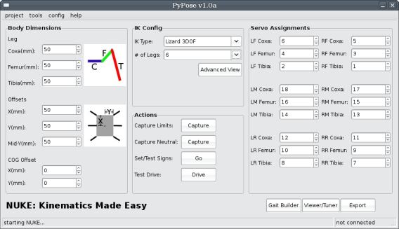
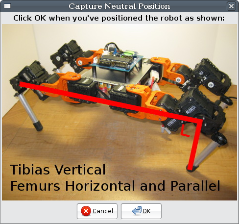

The ArbotiX robocontroller is an Arduino compatible microcontroller board, designed to control small-to-medium sized robots,
especially walkers that use Dynamixel AX or MX-series servos.
Support is typically handled through the very active user community found in the
Trossen Robotics Community Forums. You can purchase an ArbotiX from
Trossen Robotics. Please file tickets on
GitHub.
PyPose is a related project for an open-source pose capture program. NUKE is a Nearly Universal Kinematics Engine included within PyPose.
The Nearly Universal Kinematics Engine (NUKE) is an easy to use PyPose tool that creates a customized Inverse Kinematics solution and gait engine for your ArbotiX-powered robot. It works for most popular configurations of quadrupeds and hexapods.
Most of this documentation overlaps with our introductory video:
Be sure to create a robot project, and specify the number of servos before working with NUKE. This can be done exactly the same way as it was in PyPose when you were just using poses and sequences. Next, select Tools|Nuke to load the NUKE editor. Most of the editor will be disabled until you select the type of IK configuration and number of legs on your robot.

Figure 1 - NUKE editor.
After selecting the type of IK and number of legs, you will want to input the lengths of the robot's body and leg segments on the left side of the editor. Images to the side of the parameters shows what to measure. The next step is to select the servo mapping (which servo ID corresponds to which servo in the robot) on the right side of the editor.
We are now setup to capture the really important values. The first thing to capture is the minimum and maximum values of each servo, the points where the servo would collide with the body. Click the button for Capture Limits and PyPose will ask you to step through and move each servo to its extremes. PyPose automatically will configure which end is a minimum and which is a maximum. Be careful with this step, make sure that you do not rotate the servo past its 0-300 degree range, or your minimum and maximum values will be wrong.

Figure 2 - Neutral capture dialog for 3DOF lizard-style legs.
The next step is to capture the neutral position. This will vary a bit depending on the type of IK you are using, but when you click on Capture Neutral a dialog will be presented with a picture showing where your robot's legs should be placed. This pose will be saved as ik_neutral, and can be edited inside the Pose Editor if needed.
The last step in initial setup is the sign test. We need to make sure our IK engine moves legs in the correct direction depending on how our servos are attached. Clicking Do Sign Test will send us through a series of questions like "Did my left front leg move forward?". Make sure your bot is free to move (either hold it carefully, or have a stand for it).
At this time, no gait configuration is needed. NUKE automatically picks a default stance that should be effective. For information about how to improve performance, particularly range of motion and speed of walking, see NukeTuning.
Once the limits, neutrals, and signs are found, it is time to export our sketch. Clicking on Export, NUKE exports a complete sketch, so you will only need to select a folder in which to put a sketch and support code.
We now load the sketch inside the Arduino IDE, and download it to the robot. This sketch has a very simple loop() function, which will take serial commands to walk the robot around. Once the sketch is loaded we can use the Test Drive tool within NUKE to control the robot. Test Drive uses the same protocol as the ArbotiX Commander.
NUKE generates a full inverse kinematics solution and a gait engine for your robot. This is composed of 4 files:
nuke.h - header file for IK and gait engine
nuke.cpp - contains the IK engine
gaits.h - contains the gait engine
something.pde - your sketch, the name of the file matches the name of the directory you chose to export to. This is where you will put the robot's task-related code.
The main loop of your program, in something.pde will look like this:
void loop(){
// put your task code here
// make sure it does not take too long to execute each cycle
if(bioloid.interpolating == 0){
// last step is done, do the next
doIK();
bioloid.interpolateSetup(tranTime);
}
bioloid.interpolateStep();
}
Your code will interact with the gait engine using several global variables, which can be set at any time, from anywhere in your code:
Xspeed - the forward speed to walk at, in millimeters/second. Forward is positive.
Yspeed - the sideways speed to walk at, in millimeters/second. Right is positive.
Rspeed - the speed to turn at, in radians/second.
The body IK engine also relies on several other variables:
bodyPosX, bodyPosY - offset of the center of body in the air, in millimeters.
bodyRotX, bodyRotY, bodyRotZ - rotation of body about axis, in radians.
doIK() computes the position for each leg, taking into account the gait and body parameters. The interpolation part is documented under the BioloidController library. There is also a default location for each leg, known as the default stance, when the gait and body engines output all zeros. This default stance is found in the setupIK() function of nuke.cpp.
Licensing
All of the ArbotiX code, libraries, and Arduino extensions are licensed under the GNU Lesser General Public License v2.1.
PyPose, and any other desktop software included (such as PyMech), is released under the GNU General Public License v2.